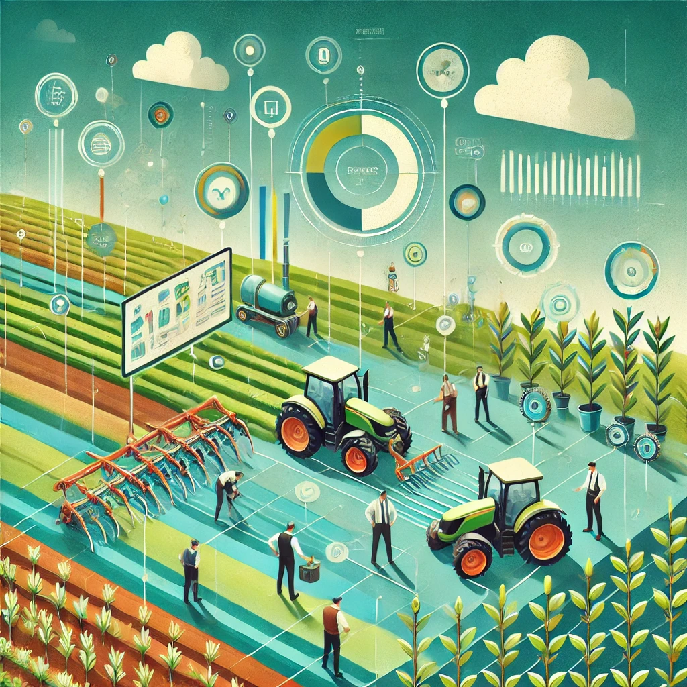

<section class="project-detail" style="padding: 60px 20px; font-family: 'Poppins', sans-serif; background-color: #f8f9fa;">
    <div class="content" style="max-width: 900px; margin: auto; background: #fff; padding: 40px; border-radius: 12px; box-shadow: 0 8px 20px rgba(0,0,0,0.1);">
      <div class="title" style="text-align: center; margin-bottom: 30px;">
        <h1 style="font-size: 28px; color: #0E2431;">Agricultural Workforce Optimization System</h1>
      </div>
      
      <p style="font-size: 16px; color: #333; line-height: 1.6; margin-bottom: 20px;">
        This Django-powered application streamlines labor management for agricultural environments, including scheduling, assignments, and payroll automation.
      </p>
      <ul style="margin-left: 20px; font-size: 16px; color: #444; line-height: 1.8;">
        <li>⚙️ Developed 12+ scalable modules for scheduling, task assignment, and payment automation.</li>
        <li>🧠 Engineered MVT architecture and supported 100+ concurrent users via role-based access.</li>
        <li>📉 Reduced manual complexity by 40% with ORM tuning and class-based views.</li>
        <li>🤝 Led Git-based collaboration in Agile, ensuring smooth team integration and delivery.</li>
      </ul>
      <div style="margin-top: 30px; text-align: center;">
        <a href="https://github.com/DarshanRedddy/agriculture-platform" target="_blank" style="padding: 10px 20px; background-color: #4070f4; color: #fff; border-radius: 6px; text-decoration: none; font-weight: 500;">View on GitHub</a>
        <br><br>
        <a href="../index.html" style="color: #4070f4; text-decoration: underline;">← Back to Portfolio</a>
      </div>
    </div>
  </section>
  
